First, before you can play, you have to create a world. In the world creation dialog you can choose a map generator (default v7) which is responsible for the terrain generation. Then you can add additional biomes and choose other cool stuff.
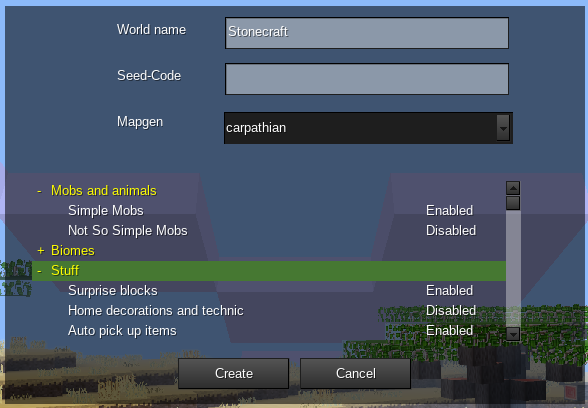
Note: Some settings need huge cpu consumption so it can be laggy for most players.
In Stonecraft you can download and install addititonal content like mods or texture packs developed from the Stonecraft/Minetest community.
In the screenshot below I’ve installed the mod ‘advtrains’. You can rename or uninstall the package if you want.
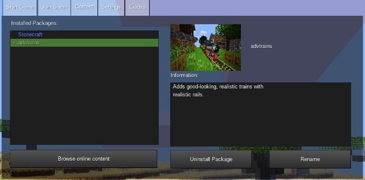
To enable ‘advtrains’ you have to select your world, then click the button ‘Configure’.
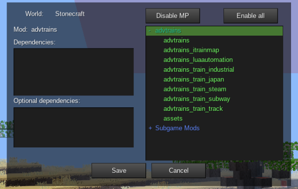
Now you can enable ‘advtrains’ either by double-clicking on it in the list below or by clicking on ‘Enable MP’.
Important: On the left side you can see the dependencies for this mod, in this case there are no one. Otherwise you have to ensure that your created world has got the required world options activated like ‘Technic’, ‘Mesecons’, ‘Pipeworks’ and so on.
There are a number of different map generators. It is possible to choose between them when creating a map. Some mods may change them radically, also all map generators allow for a lot of configuration in the advanced settings menu.
v5
Generates landscapes based on 3D Perlin noise and is notable for its unique and somewhat strange terrain shape and occasional floating islands. The biomes have to defined by mods first, otherwise it will be a stone-only landscape.
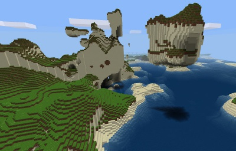
v6
Generated entirely using 2D Perlin noise and has somewhat more “realistic” terrain than v5. The weirdness of v5 is gone. This map generator has predefined biomes: Grasslands/forest, jungle, desert, taiga, tundra and gravel. The biomes can’t be modified by mods. Because of the nature of v6, the biomes are much simpler than in the other map generators, and a couple of blocks found in the other map generators can’t be found in v6 maps (for example: Silver Sand, Acacia Tree, Orange Coral)
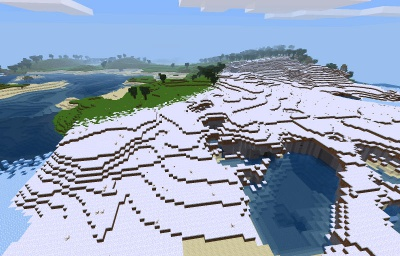
v7
Some innovations over v7, uses 2D and 3D Perlin noise. It is the default selection since Minetest 0.4.15. This map generator is notable for many simple broad and deep “rivers” (or “ridges”) at Ocean level, but they can be disabled. Like in v5, the biome have to be defined by mods first
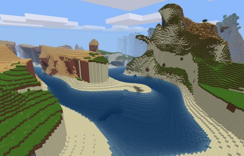
valleys
Generates a landscape featuring many hills, mountains and valleys. The valleys often contain rivers with River Water. The rivers very different than in v7, since they are not at ocean level and actually flow downhill
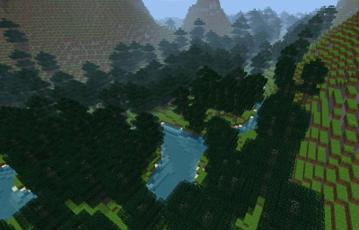
flat
This generates an (almost) entirely flat world with some biomes like in v7. Caves can still appear underground (if not disabled) and the map generator can be configured to add occasional hills and lakes.
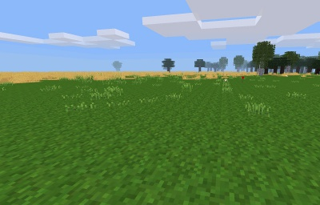
fractal
Generates a map based on a fractal. It creates by far the weirdest terrain shapes, but its results are mostly predictable. It is possible to choose one of many fractals which are based on the Mandelbrot and Julia set, which is chosen in the advanced settings menu (technical setting name “mgfractal_fractal”).
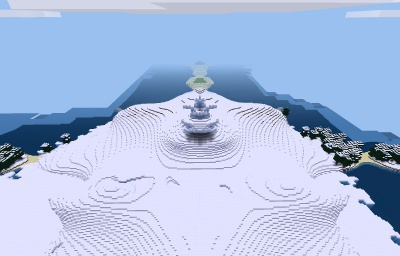
singlenode
By default, this produces a world with only air everywhere. To be precise, it produces only one type of block, air by default. It is useful for mapgen mods which define their own map generation: first, air is generated, then the mod applies its own functions which generates the terrain.
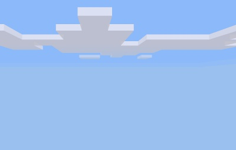
carpathian
A mapgen featuring a flat base terrain with three types of terrain variation - rolling hills, ridged and step (terraced) mountains. The aim was to create a mapgen with a flat base, somewhere where you can build a village, even a city. But to differentiate it from the flat mapgen, the flat areas are surrounded by hills and various mountain ranges.
Features:
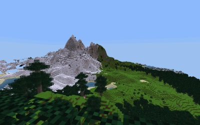
Biomes are a part of the map generation. Biomes are areas with similar ground and underground and vegetation. The biomes depend on the map generator used. Most map generators have the same biomes, but v6 is different.
Biomes in these map generators are defined by optional settings in Stonecraft like Ethereal, swamp and cave biomes and so on. If these are not defined, these map generators only generate stone worlds. Biomes in these map generators are not linked to the terrain shape; this means any biome (including grasslands) can form in flat or very mountainous areas. This section shows the biomes used by Stonecraft.
Grassland
Grassland has large amounts of Dirt nodes and Dirt with Grass blocks, on which flowers, Grass and bushes may appear naturally in this area. The underground is made of stone.
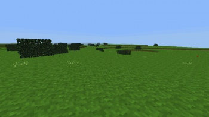
Coniferous forest
Coniferous forests grow in colder areas and are filled with pine trees. Pine tree forests can also be covered with snow in cold regions.
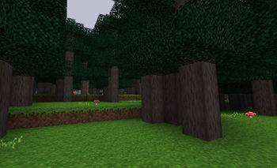
Deciduous forest
Deciduous forests are one of the most common biomes in Stonecraft and form in temperate zones. Trees, apple trees and aspen trees grow here naturally. Generally forests can spawn lakes, ponds, and rivers inside of it. Deciduous forests usually surround plains.
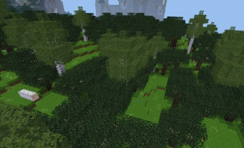
Rainforest
Rainforests (or jungles) are made of large jungle trees which grow thickly packed together. Jungle Grass and Jungle Trees bearing Jungle Leaves spawn here naturally. On fallen jungle tree logs, brown mushrooms may appear rarely. Jungles near oceans form a swamp with waterlilies.
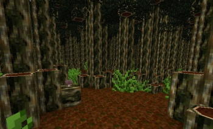 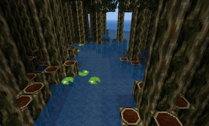
Savanna
The savanna is a dry land which is not a desert, it is populated with acacia trees and dry grass. Flat water bordering to savannahs is likely to have waterlilies and papyri.
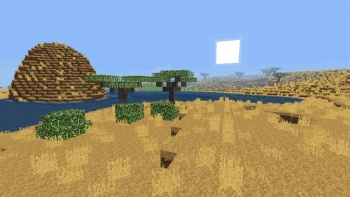
Desert
Deserts contain large amounts of desert sand and desert stone. Cacti and dry shrubs also spawn here naturally on desert sand. Cacti can form in two different shapes. Deserts form in hot and dry areas.
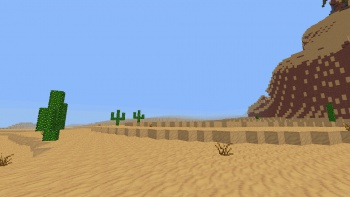
Sandstone desert
Sandstone deserts are large barren areas covered by sand with sandstone below. They form in temperate and dry climates.
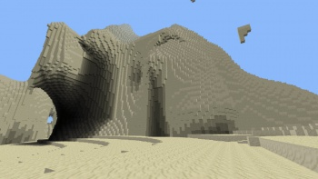
Cold desert
Cold deserts are large barren areas covered by large amounts of silver sand on top of stone. They form in cold and dry areas.
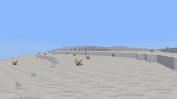
Snowy grassland
The snowy grassland biome usually borders grasslands and is completely covered by a thin layer snow on top of dirt with snow. A few snow-covered bushes can be found here.
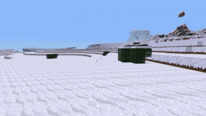
Taiga
Taigas are cold snow-covered biomes with rich vegetation with snow and dirt with snow as surface. They are populated with snow-covered pine trees. In pine tree forests, mushrooms may appear rarely on fallen pine tree logs.
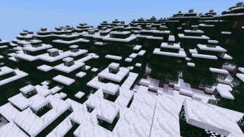
Tundra
Tundras are barren biomes in very cold climates with no vegetation and a single layer of snow blocks on top of stone. They are usually found between taigas, snowy grass lands and glaciers. This is one of the few biomes where snow blocks (rather than just snow) generates.
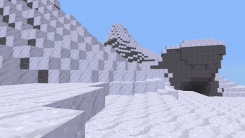
Glacier
Glaciers form only in the coldest regions and are made of large amounts of ice, covered by a thick layer of snow blocks without any vegetation. Glacier biomes can be either mountain-like as in the screenshot or very flat. Glacier biomes generally border ice sheet biomes near oceans.
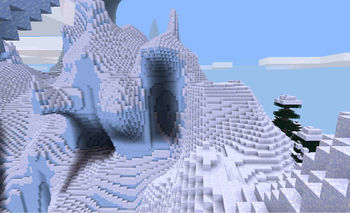
Ice sheet
Ice sheets form only in te coldest regions on top of oceans and generally border glacier biomes. Ice sheets are very flat and consist of a single layer of snow blocks with up to 10 layers of ice beneath, “floating” above water in deep oceans.
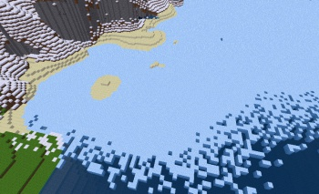
The v6 map generator has a predefined set of biomes which can’t be changed by mods directly. The outcome in different subgames will generally be very similar. Biomes in v6 also somewhat determine the terrain shape. In general, v6 biomes are a lot simpler than the biomes of the other map generators.
Plains
Plains are a quite flat biome. Large amounts of Dirt nodes and Dirt with Grass blocks, on which flowers and Grass may appear naturally (since 0.4.7). There are no bushes. The underground is made of stone.
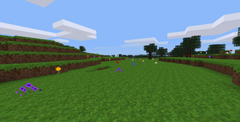
Forest
Forests are one of the most common biomes in v6 and form in temperate zones. Trees and apple trees grow here naturally, but no aspen trees. Forests usually surround plains. There are no fallen tree logs either.
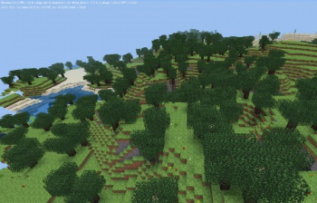
Desert
Deserts contain large amounts of desert sand and desert stone and often form large cliffs or canyons. Cacti and dry shrubs also spawn here naturally in clusters on desert sand. Deserts spawn underground rivers and lakes which can be over 200 blocks deep. In v6, cacti only form in a “column” shape of up to 4 blocks high.
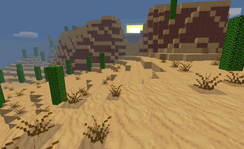
Jungle
Jungles contains large trees which grow thickly packed together. Jungle Grass and Jungle Trees bearing Jungle Leaves spawn here naturally. Jungles in v6 very similar to the jungles in the other map generators, but there are no fallen tree logs, mushrooms or swamps.
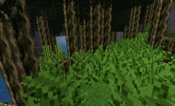
Taiga
The surface is covered with snow blocks on top of dirt with snow. Snow-covered pine tree forests are common in this biome.
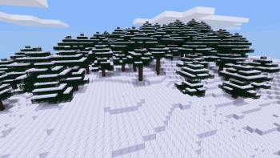
Tundra
Tundras are large open fields with thin layers of snow and are populated by dry shrubs. There are two variations of this biome.
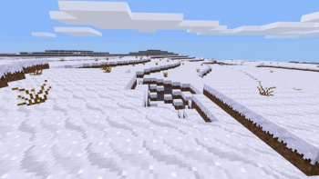
Ice sheet
Ice sheets are two layers of ice on top of ocean water. They generate bordering directly to taigas and tundras.
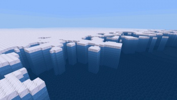
Gravel
Very rarely, unusually large areas of gravel can appear on the surface. These areas consist of nothing but gravel.
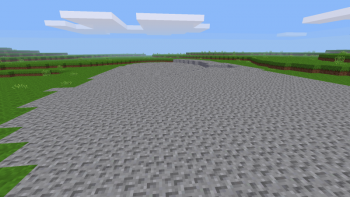
Beach
Beaches are made out of sand and form at at height of Y=2 and below, which is near the sea level by default. Beaches often extend deep into the ocean, which can easily turn a large part of the ocean floor into sand. The sand replaces the floor of other biomes. Depending on the terrain shape, beaches can be short or very long and wide (as seen in the screenshot). Clay can be found in the sand and form in small to medium-sized blobs underwater. Beaches are generated based on height and noise; they technically form independent of the water of oceans. This effect can be noted if the water level (with the setting water_level) has been reduced.
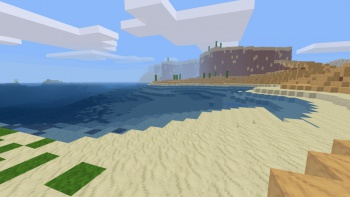
Ocean
This biome is just a large body of water that can be up to 250 blocks deep. Oceans are commonly referred to as lakes, but are called oceans because they can be so huge, sometimes even 200-350 blocks across. The natural ocean floor is dirt, but sand is also common because of the beach biomes.
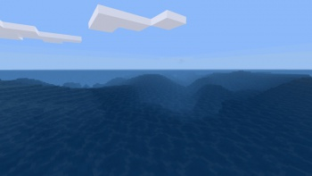
Island
Not classifiable as a biome, but still frequent enough to be classified as a technical biome, islands occur many times in oceans. These could even be referred to as a sub-biome, being a product of another biome. Islands usually raise out of the ground 3-10 blocks, but can get as large as 40-80 blocks tall.
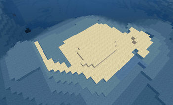
Mountain
Mountains are the most treacherous to scale. Trees and apple trees spawn here naturally. It is quite easy to be killed in a mountain biome if you don’t pay attention to where you are going.
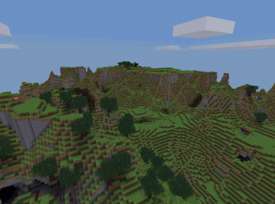
Plateau
A giant structure, plateaus are very common around mountain biomes as well as deserts. Plateaus can even float above ground and generate miniature biomes on top of it.
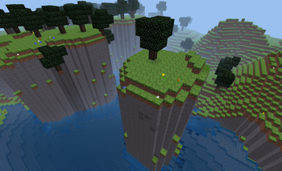
Water caves
Water caves are caves that only occur at sea level, which turn into a huge underground river or lake. These caves can lead thousands of blocks down and are extremely easily to get lost in.
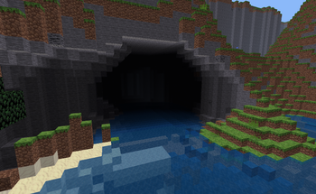
There are three big underground realms:
Here is an overview where the realms are located in the depth:
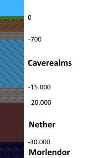
No worry, you don’t have to dig to Nether or Morlendor, there are special portals for them.
Caverealms are huge underground caverns that extend for hundreds of blocks. Within these caverns lie stalagmites of glowing crystals, small glowing gems littering the floor, and variable terrain. . Not to mention plentiful lava and even water springs. Caves spawn between y = -700 and -15.000, and can be quite extensive.

You can go into the nether by either digging deep down or build a obsidian portal as seen in the screenshots below. To activate the portal, rightclick it with a mese crystal fragment. When you go into the portal it will teleport you directly into the nether. A new portal is generated at your spawning point, and it will bring you back to your first portal (Note: the genration of the portal in the nether might take some time (up to 4 seconds)). If one of the portals get destroyed (i.e. an obisidan block gets dug) the connection is destroyed. New portals that are build in the nether will bring you near the surface again.
Rare materials like glowstone, nethersand and netherbricks can be found in the nether. Netherbricks only appear in nether dungeons, and are not craftable.
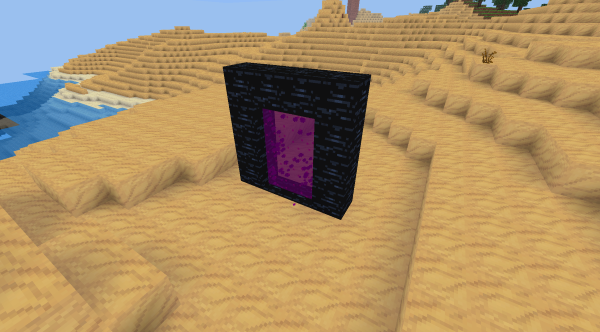
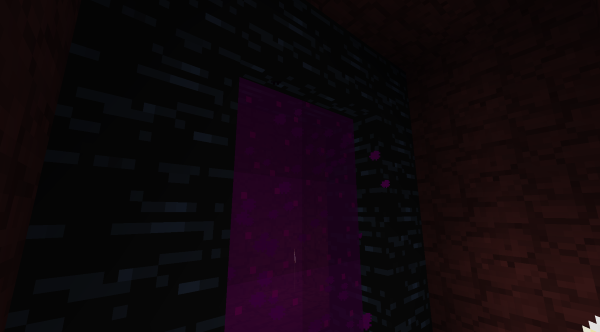
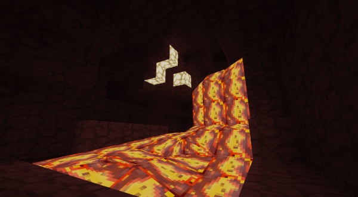
The Morlendor dimension can be reached by a Morlendor portal. The Morlendor dimension spawns only if you have activated Not So Simple Mobs in the world settings.
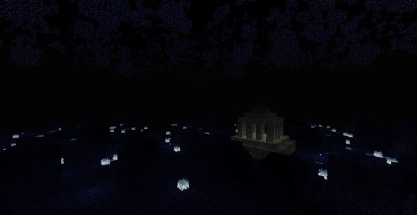
Simple underground railway corridors with a few treasure chests. Cobwebs are added if the Simple Mobs world option is activated.
Use the advanced settings to finetune the railway corridors.
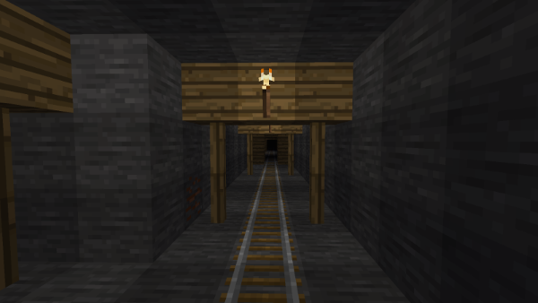
Most of these can be changed in the “Change Keys” menu. The default and most important controls are:
| Control | Description |
|---|---|
| W/A/S/D | move |
| Space | jump |
| Left mouse button | Punch, mine blocks, move an item stack in an inventory |
| Right mouse button | use (e.g. open chest or furnace), place blocks, move one item or split items in an inventory |
| Shift+Right mouse button | place blocks |
| Middle mouse button | move 10 items in an inventory |
| Mouse wheel | select item in the hotbar |
| 0-9 | select item in the hotbar |
| Q | drop block, item or tool in hand |
| I | open or close the inventory menu |
| T | open the chat window |
| Strg | descend on ladders or sneak (walk slower, prevents falling off ledges) |
| F9 | Cycle through minimap modes |
| Shift + F9 | Change minimap orientation |
| F12 | Take screenshot |
| Esc | Pause menu/abort/exit (pauses only singleplayer game) |
A boat is a wooden vehicle which floats on any water and can be used to travel on the surface of any water. Travelling by boat is slightly faster than walking.
Usage
To set the boat up, place it on top of water. After is has been placed, use (right-click) it to enter it. You are now on the boat. On the boat, the movement controls are slightly different than usual:
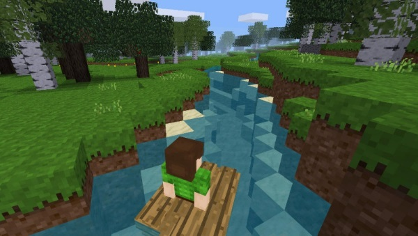
Using refers to a specific activity with a block. The kind of activity depends on the block. Not all blocks can be used. By default, using is done by clicking with the right mouse button on the block that shall be used.
By using, you can:
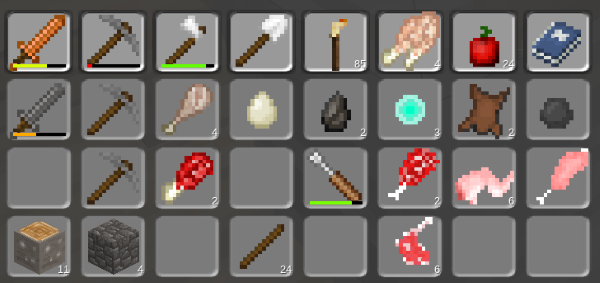
You can take items from an occupied slot if the cursor holds nothing.
You can drop items onto a slot if the cursor holds 1 or more items and the slot is either empty or contains an item stack of the same item type.
You can exchange items if the cursor holds 1 or more items and the destination slot is occupied by a different item type.
If you hold an item stack and click with it somewhere outside the menu, the item stack gets thrown away into the environment.
You can automatically transfer an item stack to/from the player inventory to/from another item’s inventory slot like a furnace, chest, or any other item with an inventory slot when that item’s inventory is accessed. When transferring items to/from the furnace, items that can be smelted will automatically go to the input slot. Items in the furnace output slot will automatically go to the player inventory.
If you want to change the default skin, you can do this in your inventory. Just click on the “Skin”-button below.
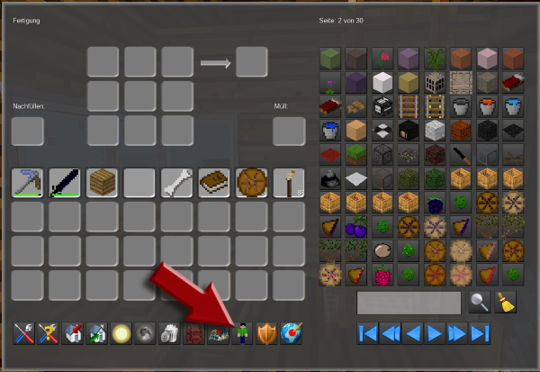
You see your current skin. Now click on “Change”.
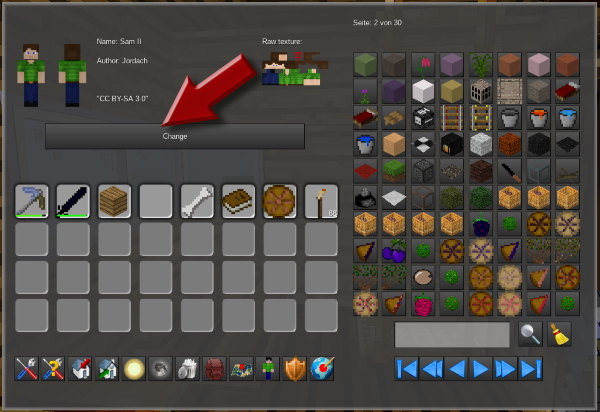
Choose your desired skin.
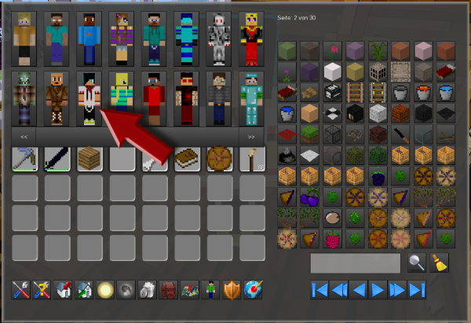
Congratulations! Press ‘F7’ to switch in third person mode to see your new skin!